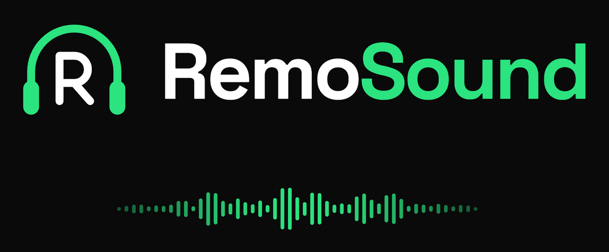

Sounds for your Remotion videos, already in the project.
RemoSound bulk-downloads sound effects from the sources you choose straight into your Remotion project, and lets your AI agent find the right cue for a scene.
How it works
Download
Search for "wind" or pick a category. Sounds land in your project and are never fetched twice.
Match
Describe a scene in English or Indonesian and get ranked cues with ready <Audio /> code.
Use
Your agent calls it as a skill, or you pick a cue by hand in the local studio and paste the code.
Get started
git clone https://github.com/MurpyyandiM2/RemoSound
cd RemoSound
python -m venv .venv
.venv\Scripts\python.exe -m pip install -r requirements.txt
.venv\Scripts\python.exe run.py --search wind --project path\to\my-videoNeeds Python 3.12 or newer. Mixkit is built in; other sources are small plugins. The studio runs on your own machine, so there is nothing to sign up for.